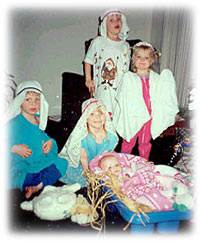

| Gold,
Common Sense and Fur
By:
Linda C. Stafford
Contributed by: Samuel P. Mallare
My
husband and I had been happily (most of the time) married
for five years but hadn't been blessed with a baby. I decided
to do some serious praying and promised God that if he would
give us a child, I would be a perfect mother, love it with
all my heart and raise it with his word as my guide.
God
answered my prayers and blessed us with a son. The next year
God blessed us with another son. The following year, he blessed
us with yet another son. The year after that we were blessed
with a daughter.
My
husband thought we'd been blessed right into poverty. We now
had four children, and the oldest was only four years old.
I
learned never to ask God for anything unless I meant it. As
a minister once told me, "If you pray for rain, make
sure you carry an umbrella."
I
began reading a few verses of the Bible to the children each
day as they lay in their cribs. I was off to a good start.
God had entrusted me with four children and I didn't want
to disappoint him.
I
tried to be patient the day the children smashed two dozen
eggs on the kitchen floor searching for baby chicks. I tried
to be understanding when they started a hotel for homeless
frogs in the spare bedroom, although it took me nearly two
hours to catch all twenty-three frogs.
When
my daughter poured ketchup all over herself and rolled up
in a blanket to see how it felt to be a hot dog, I tried to
see the humor rather than the mess.
In
spite of changing over twenty-five thousand diapers, never
eating a hot meal and never sleeping for more than thirty
minutes at a time, I still thank God daily for my children.
While
I couldn't keep my promise to be a perfect mother I didn't
even come close I did keep my promise to raise them in the
Word of God.
I
knew I was missing the mark just a little when I told my daughter
we were going to church to worship God, and she wanted to
bring a bar of soap along to "wash up" Jesus, too.
Something
was lost in the translation when I explained that God gave
us everlasting life, and my son thought it was generous of
God to give us his "last wife."
My
proudest moment came during the children's Christmas pageant.
My daughter was playing Mary, two of my sons were shepherds
and my youngest son was a wise man. This was their moment
to shine.
My
five-year-old shepherd had practiced his line, "We found
the babe wrapped in swaddling clothes." But he was nervous
and said, "The baby was wrapped in wrinkled clothes."
My
four-year-old "Mary" said, "That's not 'wrinkled
clothes,' silly. That's dirty, rotten clothes."
A
wrestling match broke out between Mary and the shepherd and
was stopped by an angel, who bent her halo and lost her left
wing.
I
slouched a little lower in my seat when Mary dropped the doll
representing Baby Jesus, and it bounced down the aisle crying,
"Mama-mama." Mary grabbed the doll, wrapped it back
up and held it tightly as the wise men arrived.
My
other son stepped forward wearing a bathrobe and a paper crown,
knelt at the manger and announced, "We are the three
wise men, and we are bringing gifts of gold, common sense
and fur."
The
congregation dissolved into laughter, and the pageant got
a standing ovation.
"I've
never enjoyed a Christmas program as much as this one,"
Father Brian laughed, wiping tears from his eyes. "For
the rest of my life, I'll never hear the Christmas story without
thinking of gold, common sense and fur."
"My
children are my pride and my joy and my greatest blessing,"
I said as I dug through my purse for an aspirin. |